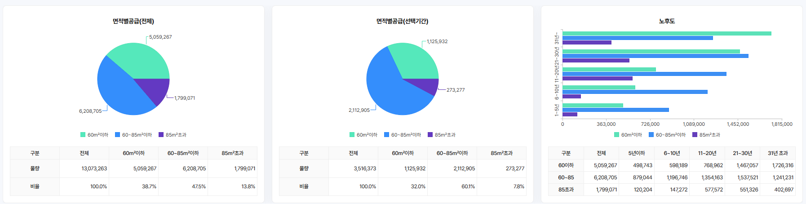

수원 권선(오목천)과 화성(봉담)이 결합된
차세대 자족형 수도권 서남부 메가시티
행정 경계를 허물고 효행지구(1.2만 호)와 봉담3 공공택지(1.8만 호), 오목천역세권이 결합하여 판교급 규모의 단일 광역생활권을 형성합니다. 2024년 역대급 입주 물량 소화 이후 2025~2026년 극단적 '공급 가뭄'에 진입하며, 신분당선 호매실-봉담 연장과 KTX 어천역을 품고 수도권 최고의 가치 재평가 국면에 돌입했습니다.
화성시 세대수 42.8만(2.5배 급증) & 수원 세대분화
효행지구 1.2만 호, 봉담3지구 1.8만 호 핵심
자연 미분양 이하 수준, 완판 행진 지속
권선구 2025년 입주 0호, 전세가 급반등 국면
거시적 공간구조 및 서수원·화성봉담 통합 입지 분석
1.1. 행정 경계를 허무는 '지리적 연계와 공간적 융합'
수원특례시 권선구 오목천동과 화성시 봉담읍은 행정구역은 나뉘어 있으나, 공간적으로는 수인분당선(오목천역), 매송고색로, 봉담과천고속화도로를 통해 유기적으로 결합된 단일 생활권입니다.
과거 두 지역 사이에 자리 잡고 있던 국립축산과학원 종전부지(효행지구), 삼보폐광산, 미개발 농지 등의 단절 요소들이 대규모 신도시급 택지개발과 생태공원 복원으로 메워지면서, 동서남북으로 끊김 없는 거대 주거·산업 융합 벨트가 형성되고 있습니다.
2040 도시기본계획 상위 정합성 핵심 비교
- • 수원시 2040: 외연적 개발 지양, 서수원 첨단 R&D 혁신 클러스터(탑동·입북동·스마트폴리스) 육성
- • 화성시 2040: 효행·봉담을 '경기남부 스마트 주거·산학협력 중심 거점'으로 지정
- • 공통 결론: 구도심의 주거 수요 분산과 첨단 반도체·모빌리티 산업의 배후 주거지로서 두 지자체의 개발 역량이 서남부 접경지로 집중
인구 · 소득 및 통근 빅데이터 정밀 분석
화성시 vs 수원시 인구 및 세대수 추이 (2008~2025)
행안부 주민등록 원자료화성시는 2008년 44.9만 명에서 2025년 98.99만 명(세대수 42.8만)으로 120% 폭증했습니다. 수원시는 인구 118.6만 명을 견고히 유지하며 세대수가 54.1만 세대로 분화되어 주택 수요가 꾸준히 증가하고 있습니다.
주요 읍면동 6개월 이주비율 (%) 및 계속거주비율
KCB 통계 (2026.09)화성시 봉담읍의 이주비율은 6.33%로 경기 남부 최고치를 기록하여 신규 인구 흡수력이 가장 강력합니다. 수원 평동(오목천동)은 4.03%의 계속거주비율로 안정적인 정주성을 나타냅니다.
주민 주요 통근 목적지 및 연소득·주담대 빅데이터
| 통근 목적지 | 핵심 거점 / 직장 | 통근 비중 (%) | 평균 연소득 | 월 카드소비 | 주택담보대출 잔액 | 성격 및 시사점 |
|---|---|---|---|---|---|---|
| 수원 영통구 매탄3동 | 삼성전자 본사 (디지털시티) | 2.49% | 1억 279만 원 | 442만 원 | 2억 8,984만 원 | 초고소득 직주근접 |
| 화성시 병점구 반월동 | 삼성전자 화성/기흥 캠퍼스 | 3.94% | 9,073만 원 | 402만 원 | 2억 8,166만 원 | 반도체 엔지니어 벨트 |
| 수원 권선구 평동 (오목천) | 고색 일반산업단지 (델타플렉스) | 3.05% | 4,600만 원 | 286만 원 | 1억 5,574만 원 | 지역 내 탄탄한 자족 기반 |
| 화성시 남양읍 | 현대기아차 남양기술연구소 | 1.37% | 7,302만 원 | 329만 원 | 2억 2,469만 원 | 모빌리티 R&D 고소득층 |
| 성남 분당구 삼평동 | 판교 테크노밸리 (IT/플랫폼) | 0.96% | 6,362만 원 | 281만 원 | 2억 4,420만 원 | 신분당선 연장 시 급증 기대 |
| 서울 강남구 역삼1동 | 강남 테헤란로 업무지구 | 1.01% | 6,029만 원 | 273만 원 | 2억 4,511만 원 | 광역버스·신분당선 잠재 수요 |
대규모 도시개발 프로젝트 및 10만 세대 주거 벨트
화성 봉담3 공공주택지구
여의도 면적의 80% (약 69만 평, 2,289,715㎡) / 계획인구 4.2만 명
수인분당선 신설역사와 신분당선 환승 체계를 포함한 수도권 3기 신도시급 공공택지입니다. 2026년 하반기 감정평가 및 보상공고를 거쳐 2027~2028년 순차 착공, 2034년 최종 완공을 목표로 합니다.
효행지구 도시개발사업
구 농촌진흥청 국립축산과학원 부지 (약 41.8만 평, 1,381,600㎡)
사업비 1조 7,000억 원(한국농어촌공사) 규모로 오목천역세권과 봉담 구도심을 물리적으로 완전 결합합니다. 오목천역 도보권 대형 상업·업무지구 및 중앙공원이 결합되어 2028년 착공, 2030년대 초반 입주를 목표로 합니다.
오목천 · 봉담 권역 도시개발 마스터플랜 및 현장 배치도
 오목천 지구단위계획 및 수인분당선 역세권 토지이용계획도
오목천 지구단위계획 및 수인분당선 역세권 토지이용계획도
 효행지구 및 서수원-봉담 연결 광역도로·녹지축 마스터플랜
효행지구 및 서수원-봉담 연결 광역도로·녹지축 마스터플랜
서수원 배후 미래 지식산업 4대 엔진
R&D 지식산업센터, 소프트웨어, 바이오 벤처 집적지. 2026~2027년 용지 분양 본격화.
성균관대 연계 바이오·나노 연구단지. GB 해제 및 구역지정 가시화 단계.
1,200여 입주기업, 1.5만 명 근로자의 서수원 최대 정밀기계·IT 제조 산업 기반.
여의도 2배 면적 첨단 ICT·생태 복합도시 구상. 장기 초대형 호재 모멘텀.
광역 철도망 '골든 크로스' 및 고속 도로망 평가
| 철도 노선 | 주요 경유지 및 정차역 | 진행 단계 | 목표 개통 | 핵심 수혜 및 시간 단축 효과 |
|---|---|---|---|---|
| 신분당선 호매실~봉담 연장 | 광교 - 화서 - 호매실 - 오목천·효행 - 봉담 | 제4차 국가철도망 반영 | 사타 완료 ➔ 예타 추진 | 판교 30분대, 강남 40분대 무환승 직결 (지역 최대 호재) |
| 수인분당선 | 인천 - 안산 - 오목천 - 고색 - 수원역 - 분당 - 왕십리 | 운행 중 (완성) | 봉담3지구 신설역 추진 | 수원역 5분(GTX-C 환승), 분당·판교 직결 대중교통 동맥 |
| 인천발 KTX (어천역) | 수인분당선 어천역 복합환승센터 직결 | 공사 진행 중 | 2025~2026년 | 오목천·봉담에서 1~2정거장으로 전국 반나절 고속철도망 이용 |
| GTX-C 노선 | 덕정 - 창동 - 삼성 - 양재 - 수원역 | 착공 완료 | 2028~2029년 | 수원역 환승을 통해 강남 삼성역 20분대 진입 |
| 경기남부 광역철도 (3호선) | 수서 - 성남 - 용인 - 수원 - 화성(봉담) | 제5차 철도망 건의 | 중장기 계획 | 4개 지자체 공동 협약 추진, 서울 동남권 직결 대안 노선 |
봉담IC를 통해 과천, 사당 및 양재IC까지 30~40분대 도달하는 서울 강남 직결 광역 축.
봉담-동탄, 봉담-송산 고속도로를 통해 동탄신도시 15분, 서해안 산업벨트 20분대 진입.
오목천동과 봉담 구도심 간 병목 해소, 수원 서부 우회도로로 수원 도심 및 북수원 직결.
주택 수급 환경, 분양·미분양 및 시세 분석
연도별 입주 공급물량 추이 (2020~2026)
공급 절벽 진입• 화성 효행구(봉담): 2024년 7,222호(프라이드시티 입주) 피크 후 2025년 2,767호, 2026년 806호로 급감 (-88.8%).
• 수원 권선구: 2024년 1,760호 입주 후 2025년 입주 0호(전무), 2026년 당수지구 일부(2,379호)에 불과.
미분양 주택 소진 현황 및 건전성
미분양 사실상 제로수원시는 2024년 말 300호에서 2026년 9월 21호로 93% 급감했습니다. 화성시 역시 99만 대도시 중 단 57호에 불과하여 자연 미분양 수준을 밑돌며 완판 사이클이 견고합니다.
2026~2029년 연도별 입주 예정 물량 총괄표 및 단지별 전수 리스트
| 입주 연도 | 화성시 효행구 (봉담·매송·비봉) |
수원시 권선구 (오목천·당수·서둔·세류) |
핵심 연계권역 소계 (오목천·봉담 축) |
화성시 기타구 (동탄·만세·병점) |
수원시 기타구 (팔달·장안·영통) |
수원·화성 전체 통합 공급 총계 |
|---|---|---|---|---|---|---|
| 2026년 | 806 호 | 2,379 호 | 3,185 호 | 3,418 호 | 1,245 호 | 7,848 호 |
| 2027년 | 1,319 호 | 452 호 | 1,771 호 | 4,476 호 | - | 6,247 호 |
| 2028년 | 0 호 (공급 전무) | 1,281 호 | 1,281 호 | 3,860 호 | 556 호 | 5,697 호 |
| 2029년 | 998 호 | 476 호 | 1,474 호 | 2,948 호 | - | 4,422 호 |
| 4개년 누적 합계 | 3,123 호 | 4,588 호 | 7,711 호 | 14,702 호 | 1,801 호 | 24,214 호 |
| 연평균 공급량 | 약 781 호 | 약 1,147 호 | 약 1,928 호 | 약 3,676 호 | 약 450 호 | 약 6,054 호 |
2024년 봉담 프라이드시티 입주 등으로 단 한 해에만 무려 8,982세대가 쏟아졌던 것과 비교할 때, 2026년부터 2029년까지 4년간 오목천·봉담 연계 생활권의 연평균 입주 물량은 1,928호로 무려 78.5% 급감합니다. 특히 2028년 봉담 권역 입주는 0호이며, 당수지구 외에는 신규 입주가 전무하여 신축 아파트 전세가 및 매매가의 하방 지지력이 매우 강력합니다.
| 연도 | 행정구역 | 단지명 | 총 세대수 | 입주예정 | 사업 형태 / 유형 | 입지 및 특징 |
|---|---|---|---|---|---|---|
| ▼ 2026년 입주 예정 단지 (9개 단지 / 합계 7,848세대) | ||||||
| 2026 | 화성시 봉담읍 | 봉담중흥S-클래스센트럴에듀(A2) | 806호 | 2026.05 | 민간분양 | 봉담2지구 중심부 신축 막바지 입주 |
| 2026 | 수원시 오목천동 | 오목천역더리브 | 201호 | 2026.02 | 주상복합 | 수인분당선 오목천역 초역세권 소형 단지 |
| 2026 | 수원시 세류동 | 매교역팰루시드 | 2,178호 | 2026.08 | 재개발(권선6) | 수원역·매교역 더블역세권 매머드 정비단지 |
| 2026 | 수원시 지동 | 수원성중흥S-클래스 | 1,154호 | 2026.01 | 재개발(지동115) | 팔달문 구도심 대단지 입주 완료 |
| 2026 | 수원시 우만동 | 남광교퍼스트루브루 | 91호 | 2026.05 | 도시형 | 동수원 월드컵경기장 인근 소형 |
| 2026 | 화성시 송산동 | 화성아너스포레 | 688호 | 2026.02 | 공공분양 | 병점 생활권 화산지구 공공분양 |
| 2026 | 화성시 장지동 | 동탄호수공원자연&자이(A93) | 965호 | 2026.01 | 장기전세 | 남동탄 호수공원 인접 공공임대 |
| 2026 | 화성시 신동 | 동탄금강펜테리움6차(A59) | 1,103호 | 2026.02 | 민간분양 | 동탄 신주거문화타운 대단지 |
| 2026 | 화성시 신동 | 동탄금강펜테리움7차(A57-2) | 662호 | 2026.07 | 민간분양 | 신주거문화타운 숲세권 입주 |
| ▼ 2027년 입주 예정 단지 (10개 단지 / 합계 6,247세대) | ||||||
| 2027 | 화성시 봉담읍 | 동화리더리브 | 258호 | 2027.09 | 민간분양 | 동화지구 인접 중소형 주거단지 |
| 2027 | 화성시 매송면 | 매송지역주택조합 | 531호 | 2027.11 | 지주택 | 어천역 KTX 역세권 인접 개발 |
| 2027 | 화성시 비봉면 | 화성비봉금성백조예미지2차(B1) | 530호 | 2027.10 | 공공택지 | 비봉지구 중심부 공공택지 신축 |
| 2027 | 수원시 당수동 | 엘리프한신더휴수원(C3) | 452호 | 2027.12 | 분상제 택지 | 당수1지구 첫 공공택지 민간분양 입주 |
| 2027 | 화성시 여울동 | 동탄역대방엘리움더시그니처 | 464호 | 2027.06 | 분상제 주복 | 동탄역 초역세권 최고 경쟁률 단지 |
| 2027 | 화성시 신동 | 동탄파라곤3차(A58) | 1,247호 | 2027.02 | 민간임대 | 신주거문화타운 장기임대 대단지 |
| 2027 | 화성시 장안면 | 화성유보라아이비시티 | 1,595호 | 2027.03 | 도시개발 | 화성 서남부 기아 화성공장 배후 산단 |
| 2027 | 화성시 향남읍 | 향남2지구(B16) | 772호 | 2027.06 | 공공임대 | 향남2신도시 공공임대 단지 |
| 2027 | 화성시 우정읍 | 조암지구(A2) | 323호 | 2027.12 | 공공분양 | 화성 서남부 소규모 공공단지 |
| 2027 | 화성시 향남읍 | 상신2지구 | 75호 | 2027.06 | 민간분양 | 향남 상신리 소형 단지 |
| ▼ 2028년 입주 예정 단지 (9개 단지 / 합계 5,697세대) | ||||||
| 2028 | 수원시 당수동 | 엘리프한신더휴수원(D3) | 697호 | 2028.04 | 분상제 택지 | 당수1지구 중심부 대단지 입주 |
| 2028 | 수원시 당수동 | 서수원에피트센트럴마크(M1/M2) | 470호 | 2028.09 | 분상제 주복 | 당수지구 상업지구 연계 주상복합 타운 |
| 2028 | 수원시 평동 | 수원역아너스빌타임원 | 114호 | 2028.11 | 소형 주복 | 오목천/평동 수인분당선 인접 단지 |
| 2028 | 수원시 영화동 | 두산위브더센트럴수원 | 556호 | 2028.09 | 구도심정비 | 영화동 정비사업 (1순위 14.5:1 완판) |
| 2028 | 화성시 산척동 | 동탄포레파크자연앤푸르지오(A76-2) | 1,524호 | 2028.07 | 공공분양 | 남동탄 자연앤 대단지 공공분양 |
| 2028 | 화성시 산척동 | 동탄꿈의숲자연&데시앙(A78) | 1,170호 | 2028.06 | 공공분양 | 동탄 호수공원 인접 숲세권 단지 |
| 2028 | 화성시 여울동 | e편한세상동탄역어반원(C14) | 610호 | 2028.07 | 공공임대 | 광역비즈니스콤플렉스 중심 임대 |
| 2028 | 화성시 남양읍 | 화성남양뉴타운우미린(B16) | 556호 | 2028.07 | 공공택지 | 남양뉴타운 마지막 분양 단지 |
| ▼ 2029년 입주 예정 단지 (5개 단지 / 합계 4,422세대) | ||||||
| 2029 | 수원시 서둔동 | 화서역호수공원아너스빌 | 476호 | 2029.10 | 민간분양 | 화서역·스타필드 도보권 신축 |
| 2029 | 화성시 비봉면 | 야목역서희스타힐스그랜드힐 | 998호 | 2029.10 | 지주택/일반 | 수인분당선 야목역세권 대단지 |
| 2029 | 화성시 향남읍 | 화성향남롯데캐슬시그니처 | 1,542호 | 2029.12 | 민간분양 | 서해선 향남역 외곽 대단지 |
| 2029 | 화성시 향남읍 | 향남역그로브스위첸 | 933호 | 2029.06 | 민간분양 | 향남역 역세권 주상복합 |
| 2029 | 화성시 신동 | 화성동탄2 C27블록 | 473호 | 2029.06 | 공공분양 | 신주거문화타운 잔여 공공분양 |
주택 공급 면적 및 연차별 노후도 정밀 비교 (수원시 vs 화성시 봉담 권역)

※ 파이 차트: 면적별 누적 공급 vs 선택기간 공급 / 우측 막대 그래프: 1~5년(신축)부터 31년 이상(노후)까지 면적대별 분포

※ 화성시는 10년 이하 신축·준신축 물량이 압도적이며, 31년 초과 노후 주택은 0.8%에 불과함
[실제 데이터 표 A] 수원시 vs 화성시 주택 전용면적별 공급 현황 및 비중 비교
| 지역 | 공급 구분 | 전체 공급량 | 60㎡ 이하 (소형) | 60~85㎡ 이하 (국평) | 85㎡ 초과 (대형) | 면적 구성 특징 |
|---|---|---|---|---|---|---|
| 수원시 | 전체 누적 공급 | 13,073,263 호 (100.0%) | 5,059,267 호 (38.7%) | 6,208,705 호 (47.5%) | 1,799,071 호 (13.8%) | 전통 도심 특성상 소형(38.7%) 비중이 높은 편 |
| 선택기간 공급 | 3,516,373 호 (100.0%) | 1,125,932 호 (32.0%) | 2,112,905 호 (60.1%) | 273,277 호 (7.8%) | 최근 공급은 국평(84㎡ 중심 60.1%)에 집중 | |
| 화성시 (봉담 등) |
전체 누적 공급 | 309,333 호 (100.0%) | 98,823 호 (31.9%) | 170,810 호 (55.2%) | 39,700 호 (12.8%) | 신도시 택지개발 위주로 국민평형(55.2%) 중심 공급 |
| 선택기간 공급 | 163,222 호 (100.0%) | 57,028 호 (34.9%) | 90,865 호 (55.7%) | 15,329 호 (9.4%) | 3040 실수요 맞춤형 59~84㎡ 집중 공급 |
[실제 데이터 표 B] 수원시 vs 화성시 연차별 주택 노후도 현황 (도표 원본 수치 전수 정리)
| 지역 | 면적 구분 | 전체 물량 | 5년 이하 (신축) | 6~10년 (준신축) | 11~20년 (구축진입) | 21~30년 (노후주택) | 31년 초과 (재건축대상) |
|---|---|---|---|---|---|---|---|
| 수원시 (권선구 등) |
60㎡ 이하 | 5,059,267 호 | 498,743 호 (9.9%) | 598,189 호 (11.8%) | 768,962 호 (15.2%) | 1,467,057 호 (29.0%) | 1,726,316 호 (34.1%) |
| 60~85㎡ 이하 | 6,208,705 호 | 879,044 호 (14.2%) | 1,196,746 호 (19.3%) | 1,354,163 호 (21.8%) | 1,537,521 호 (24.8%) | 1,241,231 호 (20.0%) | |
| 85㎡ 초과 | 1,799,071 호 | 120,204 호 (6.7%) | 147,272 호 (8.2%) | 577,572 호 (32.1%) | 551,326 호 (30.6%) | 402,697 호 (22.4%) | |
| 수원시 합계 | 13,073,263 호 | 1,497,991 호 (11.5%) | 1,942,207 호 (14.9%) | 2,700,697 호 (20.7%) | 3,555,904 호 (27.2%) | 3,370,244 호 (25.8%) | |
| 화성시 (봉담 권역) |
60㎡ 이하 | 98,823 호 | 22,068 호 (22.3%) | 33,060 호 (33.5%) | 27,317 호 (27.6%) | 14,636 호 (14.8%) | 1,742 호 (1.8%) |
| 60~85㎡ 이하 | 170,810 호 | 28,827 호 (16.9%) | 59,930 호 (35.1%) | 51,603 호 (30.2%) | 29,821 호 (17.5%) | 629 호 (0.4%) | |
| 85㎡ 초과 | 39,700 호 | 6,354 호 (16.0%) | 8,975 호 (22.6%) | 20,343 호 (51.2%) | 3,971 호 (10.0%) | 57 호 (0.1%) | |
| 화성시 합계 | 309,333 호 | 57,249 호 (18.5%) | 101,965 호 (33.0%) | 99,263 호 (32.1%) | 48,428 호 (15.7%) | 2,428 호 (0.8%) |
- • 수원시의 극심한 노후도 (21년 이상 53.0%): 수원시는 21년 이상 된 노후 아파트가 전체의 53.0%(692.6만 호)에 달하며, 31년 초과 재건축 연한 도래 아파트만 25.8%에 이릅니다. 반면 5년 이하 신축은 11.5%에 불과하여 신축 갈증이 극에 달해 있습니다.
- • 화성시(봉담)의 신축 압도성 (10년 이하 51.5%): 화성시는 10년 이하 신축·준신축 비율이 51.5%(15.9만 호)로 과반을 넘으며, 31년 초과 노후 주택은 0.8%(2,428호)에 불과합니다.
- • 인구 이동의 직접적 원인: 수원 권선구·팔달구 등 구도심의 20~30년 차 노후 단지에 거주하던 3040 세대가 쾌적한 주거환경과 신축 대단지 인프라를 찾아 바로 옆 화성 봉담 신도시(봉담2지구, 동화지구, 내리지구 프라이드시티 등)로 대거 이주(이주율 6.33% 1위)하는 핵심 메커니즘이 이 통계로 명확히 입증됩니다.
오목천 · 봉담 주요 아파트 단지 실거래 시세 및 전세가율 비교
| 단지명 | 위치 / 역세권 | 준공 | 세대수 | 매매 시세 (전용84) | 전세 시세 (전용84) | 전세가율 | 단지 평가 및 특징 |
|---|---|---|---|---|---|---|---|
| 쌍용더플래티넘오목천역 | 수원 권선구 오목천역 초역세 | 2022년 | 930세대 | 6.5 ~ 7.2 억 | 4.2 ~ 4.6 억 | 64% | 오목천 권역 대장주, 효행지구 연계 최대 수혜 |
| 남광하우스토리 | 수원 권선구 오목천동 | 2007년 | 428세대 | 4.2 ~ 4.7 억 | 2.9 ~ 3.2 억 | 68% | 가성비 실거주 및 경매/갭투자 인기 단지 |
| 봉담2 중흥S클래스 에듀파크 | 화성시 봉담2지구 중심 | 2022년 | 1,050세대 | 5.3 ~ 6.0 억 | 3.5 ~ 3.8 억 | 65% | 초·중·고 학세권, 봉담2지구 랜드마크 대단지 |
| 봉담자이 라피네 | 화성시 동화지구 | 2023년 | 750세대 | 5.5 ~ 6.2 억 | 3.6 ~ 4.0 억 | 65% | 브랜드 프리미엄, 봉담자이라젠느(862호)와 타운 형성 |
| 힐스테이트 봉담 프라이드시티 | 화성시 내리지구 | 2024년 | 2,333세대 | 4.8 ~ 5.4 억 | 2.8 ~ 3.2 억 | 59% | 입주장 매물 소화 완료, 숲세권 4천세대 매머드 단지 |
특수 리스크, 환경 복원 및 위반건축물 양성화 가이드
수원 군공항 고도제한 및 소음 영향권 분석
수원비행장 비행 항로가 서수원(고색·평동·오목천 일부)과 화성 봉담 북동부(와우리 일원) 상공을 지나며 일부 소음 및 건축 고도제한이 적용됩니다. 그러나 봉담2·3지구 핵심부는 영향권 밖이며, 군공항 이전 특별법 가시화 시 가장 폭발적인 자산가치 상승을 누릴 '비대칭 옵션'으로 작용합니다.
삼보폐광산 6만 평 '기후대응 도시숲' 생태 복원
30년간 방치되었던 화성 봉담 삼보폐광산이 국비·지방비 투입으로 약 6만 평의 친환경 도시숲·생태체험공원으로 탈바꿈하고 있습니다. 서수원 하수처리장 지하화 및 상부 체육공원화와 함께 지역의 고질적 혐오 요소가 최대 친환경 힐링 자산으로 전환되었습니다.
구도심 빌라·다가구 위반건축물 3대 유형 및 2025~2026 양성화 특별법 대응 가이드
일조권 사선제한 위반 사례 다수. 2025~2026 특별조치법 요건 충족 시 양성화 합법화 가능성 높음.
상가를 주거로 개조. 주차대수 미확보 시 양성화 불가, 전세대출·보증보험 불가로 매수 시 극도 주의.
소방·정화조 기준 위반. 적발 시 매년 이행강제금 및 원상복구 명령. 경매/매매 시 무조건 회피 대상.
실수요자 및 투자자를 위한 단계별 실행 로드맵 (Action Plan)
• 예산 6억~7억 원대 (대장주 선점): 수인분당선 도보권이자 효행지구 개발 인프라를 누릴 수 있는 쌍용더플래티넘오목천역 또는 학군 인프라가 완성된 봉담2 중흥S클래스를 매수 1순위로 고려하십시오.
• 예산 4억~5억 원대 (가성비 신축 공략): 2024년 대규모 입주로 인해 일시적 매물 소화 과정을 거친 봉담 프라이드시티(힐스테이트/자이) 또는 봉담자이라피네 전용 84㎡를 공략하십시오. 2025~2026년 공급 절벽으로 인해 매매·전세 시세 회복 탄력성이 가장 높습니다.
• 전세가율 65~70% 회복기 갭투자: 신규 입주 공급 제로 상황에서 전세가가 급등 중입니다. 갭 1억~1.5억 원 수준으로 진입 가능한 오목천 역세권 및 봉담2지구 준신축 단지를 선점하십시오.
• 봉담3지구 토지보상금 유동성 효과: 2026~2027년 봉담3지구(약 69만 평)의 대규모 토지보상금이 풀리면 인근 대토 수요 및 재투자 자금이 오목천·봉담 기축 아파트로 대거 유입될 것입니다. 보상금 지급 전 선취매 전략이 유효합니다.
수원 오목천과 화성 봉담은 지리적 인접성을 바탕으로 효행지구와 봉담3지구를 통해 10만 세대급 분당급 자족 거대도시로 완성되고 있습니다. 2024년 역대 최대 입주 물량의 소화가 끝나고 2025~2026년 극단적 공급 절벽과 미분양 '제로' 상태가 맞물려 있는 지금이, 실수요자와 투자자 모두에게 가장 안전하고 매력적인 진입 적기입니다.